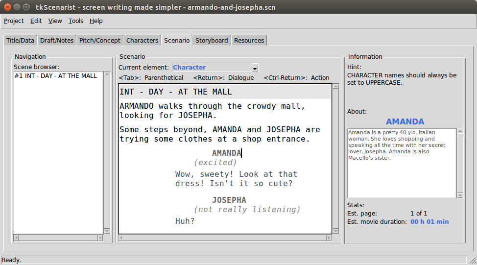

Return to summary.
This app tab allows scenario script writing, which is the heart of this software.
It is composed of:
All section panes are resizable: put mouse pointer between each pane, then click and drag sash to get desired size.
Return to summary.
Scene browser fills out automatically while scripting new scenes into the text editor.
Click on a list item to jump from scene to scene.
Return to summary.
The scenario text editor is composed of:
Return to summary.
Scenario script writing follows many strict policies one may identify through Scenario Elements.
The present software has deliberately chosen to keep only the followings:
Notice: Transition element is not really recommended for professionally-oriented documents.
The scenario editor has a dropdown list one may use in some case to apply a given element to the text line where the insertion cursor resides at this moment.
Please, note it is highly recommended to better use the elements chaining process instead of this.
Return to summary.
Scenario editor has a dynamic indicator display showing how to use elements chaining process efficiently.
This indicator shows what will happen if you press one of <Tab>,
<Return> or <Ctrl-Return> chaining keys on your keyboard.
When the insertion cursor is into an EMPTY line, this empty line will SWITCH to the element indicated by the display.
When the insertion cursor is into a NON-EMPTY line, it will CREATE a new following line with the element indicated by the display.
Please, note when there is nothing indicated for a given keystroke, this means nothing will happen if you hit this key at this moment.
People willing to customize scenario elements chaining process or elements paragraph look'n'feel may consider using the Scenario Elements Editor (SEE).
Return to summary.
The scenario editor comes with a character name detection algorithm which even recognizes long composed names e.g. 'PIERRE-HENRI DE MORTE-FONTAINE CHÂTEAUROUX'.
You have nothing to do more than simply type your text the way you like. If the algorithm detects in your words something like a registered character name, it will pop down an autocompletion list allowing you to choose between all matching names.
Autocompletion feature is a real time-spare feature in some cases.
Use arrow keys to select desired character name into the completion
list and then press <Return> (or <Tab>) key to insert it into your
text script.
Press <Escape> key if you don't want to bother with this feature or
simply go on writing without taking care more than this.
Character names are always inserted in uppercase: this is a script writing policy.
Feel free to use another name detection feature: when typing a new
unregistered character name into a Character element line i.e. while
starting a dialogue, the software will automagically register this new
name into the character names database.
All name detection features show up detected character name's history log on right side, each time THERE IS something to display, of course.
Return to summary.
The scenario text editor is somehow a specific plain text editor, but for major things, it acts exactly the same way as generic plain text editors.
This object allows multiple line editing with carriage return, undo/redo stack and many other features.
Pressing on the carriage return key will insert a new paragraph.
Double-clicking on a word will select this word only.
Triple-clicking on a word will select the whole paragraph.
You may select all text (in paragraph only) by using Edit > Select
all menu option or with <Ctrl-A> keyboard shortcut.
Any selection band is likely to be replaced by the next keystroke on the keyboard.
To undo last operation, either use Edit > Undo menu option or try
<Ctrl-Z> keyboard shortcut.
To redo last cancelled operation, either use Edit > Redo menu
option or try <Ctrl-Shift-Z> keyboard shortcut.
Please, note undo/redo features are NOT guaranteed to work in all case.
Return to summary.
The information frame zone displays automatic hints, detected character name's history log and few stats data.
Please, note these data are only estimations, they do NOT reflect any reality.
You will find more accurate data while exporting your project into some PDF® documents.
Return to summary.
IMPORTANT: don't forget to save your project regularily, either
with Project > Save menu option or with <Ctrl-S> keyboard shortcut.
Return to summary.
Return to homepage.